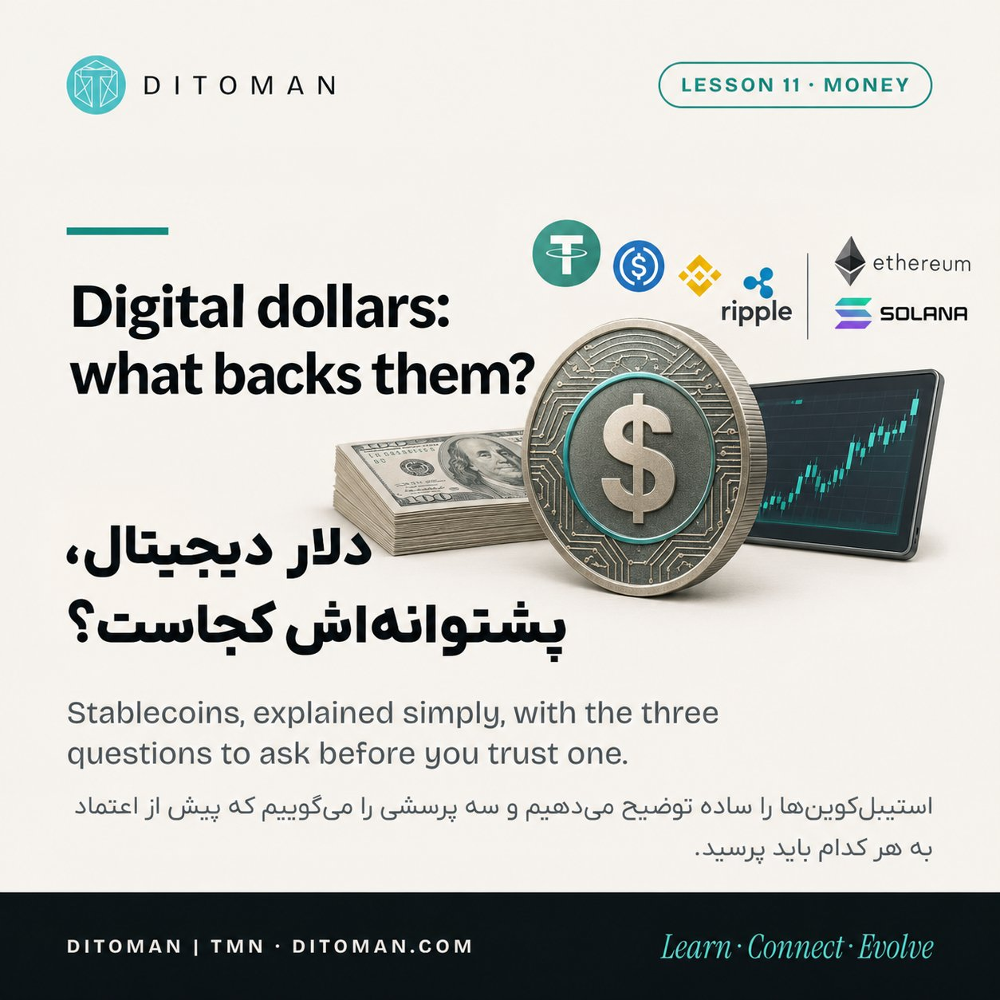
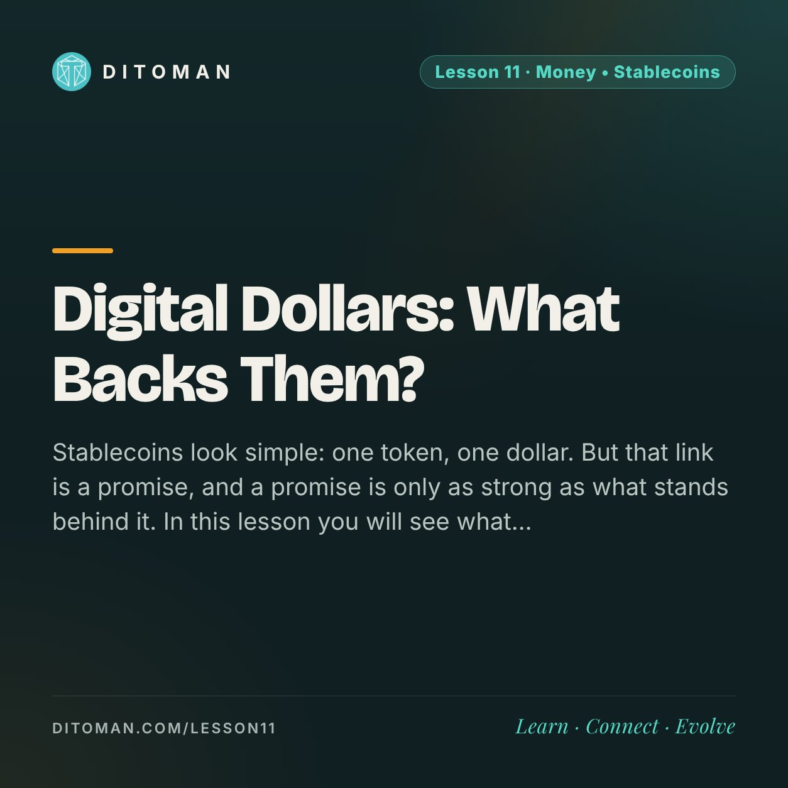

Digital Dollars: What Backs Them?
الدولار الرقمي، أين غطاؤه؟
Stablecoins look simple: one token, one dollar. But that link is a promise, and a promise is only as strong as what stands behind it. In this lesson you will see what stands behind stablecoins, how one famous stablecoin collapsed in May 2022, and the one test that matters most before you trust any token.
تبدو العملات المستقرة بسيطة: رمز واحد، دولار واحد. لكن هذه الصلة وعد، والوعد لا يقوى إلا بقدر ما يسنده. في هذا الدرس سترى ما الذي يقف خلف العملات المستقرة، وكيف انهارت إحدى أشهرها في مايو 2022، وأي اختبار هو الأهم قبل الثقة بأي رمز.
Lesson Content
محتوى الدرس
Read the lesson in English or Persian.
اقرأ الدرس بالفارسية أو الإنجليزية.
You have probably seen USDT, USDC and other tokens quoted at almost exactly one dollar, day after day, while bitcoin jumps around by thousands. Why does that happen? Because someone has promised to keep the token there. Whether you should believe that promise depends on three things: who makes it, what stands behind it, and whether you can turn the token back into dollars.
Think of this lesson as a short detective story. Every stablecoin has a suspect (the issuer), a stash (the backing), and a way out (redemption). Your job is to check all three.
01. What a stablecoin is
A stablecoin is a digital token designed to keep its value close to one US dollar. That attachment to the dollar is called the peg. Think of a gift card that is always meant to be worth one dollar: the card itself is just a piece of plastic, and its worth comes entirely from the promise behind it.
This is different from the money in your bank account. A bank deposit is a claim on a bank. A stablecoin is a claim on whoever issues it, and the terms of that claim are written in the issuer's documents, not in a bank's branch. Read those terms before you rely on them.
02. Three ways to back a token
Most stablecoins rely on one of three kinds of backing. The picture below shows them side by side.
Cash and government bonds: the issuer holds cash or short-term government bonds for the tokens it issues. This is the most common model among the large stablecoins. The question is always how safe those reserves really are, and how easily they can be sold.
Crypto collateral: the token is backed by other crypto assets locked as collateral, usually worth more than the tokens issued. If those assets fall sharply, the system is stress-tested and needs a safety margin to stay intact.
Algorithmic model: there is no real reserve. The system tries to hold the price using supply rules and a second token. This model is the one that failed in May 2022, which is the case study below.

03. A reserve report is not an audit
When an issuer says a token is fully backed, the claim may come from a report called an attestation. An attestation is usually a snapshot of one moment, prepared for a specific date. A full audit goes deeper and covers a longer period. They are different tools, and a headline rarely tells you which one you are reading.
US law now sets firmer rules. Under the GENIUS Act, stablecoins must be backed by liquid assets such as US dollars and short-term Treasury bills, and issuers must publicly disclose the composition of their reserves every month. Issuers above $50 billion in size must also get annual audits. Those are good questions to ask of any issuer, anywhere in the world.
Ask four questions about any reserve report: what is held? How much of it is cash? Who checks it? How often is it published?
04. Redemption: the test that matters most
A stablecoin is worth one dollar only if you can, in practice, turn it into dollars. Usually the issuer redeems tokens only for approved customers, under set terms and minimum amounts. Most people can only sell on the market, to another buyer, at whatever price the market offers.
If holders doubt the backing, or the market is thin, the price can drop below one dollar. Those who need cash first often get the worst deal, because they sell into the panic. So the real question is not only what the token claims to be worth, but who can cash it in, and at what price.
05. Case study: how UST lost its peg
In 2022, TerraUSD (UST) was one of the best-known stablecoins. It was an algorithmic token: it was not backed by dollars or any other asset. Instead, it kept its peg through a pair of tokens. One UST could always be minted by burning one dollar's worth of LUNA, and a UST could be redeemed for LUNA worth one dollar. That was the whole mechanism.
Demand was boosted by Anchor, a lending platform that paid around 18 to 20 percent a year on UST deposits. That yield was far above normal, and it was not generated by ordinary lending. By early May 2022, UST had dipped to about 98 cents, and some large holders began to withdraw.
Then the loop reversed. As UST sold below one dollar, arbitrage no longer worked as the design assumed. The Luna Foundation Guard tried to defend the peg by spending its reserves. By 16 May 2022 it said less than $100 million in fungible assets remained. LUNA's value collapsed toward zero, UST fell to a few cents, and the damage spread far beyond one token.
The lesson is not that algorithms are evil. It is that a promise held up only by confidence and a second token can vanish in days. Today, the question to ask is simple: if confidence broke tomorrow, what is actually left to pay holders?
06. Three myths to drop
Myth 1: a stablecoin is always safe, like cash in a bank. A stablecoin is a claim on its issuer, not a guarantee from a government. Its safety depends on the backing, the redemption rules and the issuer's conduct.
Myth 2: 'fully backed' means it cannot break. A reserve can be real and still be illiquid, or be held in a form that cannot be sold quickly. Even a well-backed token can wobble when fear spreads faster than cash can move.
Myth 3: all stablecoins work the same way. They do not. Their backing, issuer and redemption differ, and you should check each one separately.
07. Why this matters to ordinary people
Stablecoins can move money faster and more cheaply than many traditional channels, and they run around the clock. In places where people look for a steadier store of value, they offer access to dollar-based money, which is one reason they have grown so fast.
But convenience carries risk. The weaker the backing, the bigger the damage when confidence breaks. Speed works in both directions: it helps you enter quickly, and it helps everyone leave quickly too.
08. The rules are being written
In the United States, the GENIUS Act was signed into law on 18 July 2025. It created the first federal regulatory framework for stablecoins. The law takes effect on the earlier of two dates: 18 months after enactment, or 120 days after the main regulators issue their final rules.
So the detailed rules are still being written, and they are not the same everywhere. The European Union, Hong Kong and others have their own frameworks. Read every new rule with the three questions in mind: who issues it, what backs it and whether redemption is real.
09. Try it yourself: read a reserve report
Pick any stablecoin you know and follow these six steps. It takes about ten minutes.
1. Find the official page. Use the issuer's own transparency or reserve page, not a summary site.
2. Check the date. An old report tells you about the past only.
3. List the reserves. Cash, short-term government bonds, other assets. What share is cash-like?
4. Identify the report type. Is it an attestation or an audit? Who wrote it?
5. Find the redemption terms. Who can redeem, what is the minimum amount, what fees apply, and how long does it take?
6. Write one sentence. 'I would trust this token because…' or 'I would not trust it because…'. Your reason is the real lesson.
10. Where TMN fits
TMN is not a stablecoin. It has no dollar peg and no issuer promising to redeem it, so its price is set by the market. That is why the checks in Lesson 05 and the liquidity ideas in Lesson 09 are the right tools for TMN, and the redemption test does not apply to it.
This lesson does not judge any project. It only explains a category of token, so you can recognise the category when you meet it.
What to take from this
A stablecoin is a promise. Its value depends on what backs it and whether you can actually redeem it.
Before you trust one, ask three things: who issues it? What backs it, and is it published? Can you redeem it for dollars?
A reserve report and a full audit are different tools. Read the difference before you read the headline.
History matters: a promise held up only by confidence can vanish in days, as UST showed in 2022.
Use the Lesson 05 checklist on any token, stablecoin or not.
ربما رأيت رموزًا مثل USDT وUSDC تُسجَّل يومًا بعد يوم عند دولار واحد تقريبًا تمامًا، بينما يتأرجح البيتكوين بآلاف الدولارات. لماذا؟ لأن أحدًا وعد بإبقاء الرمز هناك. وتصديق هذا الوعد يتوقف على ثلاثة أمور: من يقدّمه، وما الذي يسنده، وهل يمكن تحويل الرمز إلى دولار مرة أخرى.
انظر إلى هذا الدرس كأنه ملف صغير. لكل عملة مستقرة ثلاثة أجزاء: جهة مُصدِرة (من يعد)، وغطاء (ما يسند الوعد)، ومخرج (الاسترداد). وعملك هو فحص الثلاثة.
01. ما هي العملة المستقرة
العملة المستقرة رمز رقمي هدفه إبقاء قيمته قريبة من دولار أمريكي واحد. ويُسمّى هذا الارتباط بالدولار «الربط» (peg). كأنها بطاقة هدايا يُفترض أن تساوي دولارًا دائمًا: البطاقة نفسها مجرد قطعة بلاستيك، وقيمتها كلها تأتي من الوعد الذي يقف خلفها.
وهذا يختلف عن مال الحساب المصرفي. فالوديعة المصرفية مطالبة لك على بنك. أما العملة المستقرة فمطالبة لك على مصدرها، وشروط هذه المطالبة مكتوبة في وثائق المصدِر، لا في فرع بنك. فاقرأ هذه الشروط قبل أن تعتمد عليها.
02. ثلاث طرق لإسناد رمز
تعتمد معظم العملات المستقرة على واحد من ثلاثة أنواع من الغطاء. وتعرض الصورة أدناه الثلاثة جنبًا إلى جنب.
النقد والسندات الحكومية: يحتفظ المصدِر مقابل كل رمز يصدره بنقد أو بسندات حكومية قصيرة الأجل. وهذا هو النموذج الأشيع في العملات المستقرة الكبيرة. والسؤال الدائم هو: ما مدى أمان هذه الاحتياطيات فعلًا، وما سرعة بيعها.
الضمان بالكريبتو: يُسنَد الرمز بأصول رقمية أخرى مقفلة ضمانًا، غالبًا بقيمة أعلى من الرموز المُصدَرة. وإذا هبطت تلك الأصول بشدة يُختبر النظام ويحتاج إلى هامش أمان ليبقى سليمًا.
النموذج الخوارزمي: لا يوجد غطاء حقيقي. يحاول النظام إبقاء السعر بقواعد المعروض ورمز ثانٍ. وهذا النموذج هو الذي فشل في مايو 2022، ودراسة الحالة أدناه تتناوله.

03. تقرير الاحتياطي ليس تدقيقًا
حين يقول مصدِر إن رمزًا مغطى بالكامل، فقد يرد هذا الادعاء في تقرير يسمى «شهادة التحقق» (attestation). وهذا التقرير غالبًا لقطة عند لحظة محددة. أما التدقيق الكامل فأعمق ويغطي فترة أطول. هاتان أداتان مختلفتان، وعنوان الخبر لا يقول عادةً أيهما تقرأ.
وللقانون الأمريكي الآن قواعد أشد. فبموجب قانون GENIUS يجب أن تُسنَد العملات المستقرة بأصول سائلة مثل الدولار وأذون الخزانة قصيرة الأجل، ويجب على المصدِرين نشر تركيبة احتياطياتهم علنًا كل شهر. وعلى المصدِرين الذين يتجاوز حجمهم 50 مليار دولار إجراء تدقيق سنوي أيضًا. وهذه أسئلة جيدة لأي مصدِر في أي مكان في العالم.
اسأل أربعة أسئلة عن أي تقرير احتياطي: ماذا يُحتفظ به؟ كم منه نقد؟ من يتحقق؟ وكم مرة يُنشر؟
04. الاسترداد: الاختبار الأهم
لا تساوي العملة المستقرة دولارًا فعلًا إلا إذا أمكن عمليًا تحويلها إلى دولار. وعادةً لا يعيد المصدِر الرمز إلى دولار إلا للعملاء المعتمدين، بشروط وحد أدنى للمبلغ. أما معظم الناس فيستطيعون فقط البيع في السوق لمشترٍ آخر، بأي سعر يعطيه السوق.
وإذا شك الحائزون في الغطاء أو كان السوق ضحلًا، فقد ينزل السعر عن دولار. ومن يحتاجون إلى النقد مبكرًا يخرجون غالبًا بأسوأ صفقة، لأنهم يبيعون في الذعر. فالسؤال الحقيقي ليس فقط ما مدى ثقة الرمز بنفسه، بل: من يستطيع فعلًا تسييله وبأي سعر.
05. دراسة حالة: كيف فقدت UST ارتباطها بالدولار
في 2022 كانت TerraUSD (UST) من أشهر العملات المستقرة. كان هذا الرمز خوارزميًا: لا يسنده دولار ولا أي أصل آخر. بل كان يُبقى عند دولار واحد بمساعدة رمز ثانٍ هو LUNA. فبحرق LUNA بقيمة دولار يمكن صنع UST واحد، وبكل UST يمكن الحصول على LUNA بقيمة دولار. وكانت هذه هي الآلية كلها.
وتعزز الطلب عبر Anchor، وهي منصة إقراض كانت تدفع نحو 18 إلى 20 بالمئة سنويًا على ودائع UST. وكان هذا العائد أعلى بكثير من المعتاد ولم يكن ناتجًا عن الإقراض العادي. وفي أوائل مايو 2022 هبط سعر UST إلى نحو 98 سنتًا وبدأ بعض كبار الحائزين بالخروج.
ثم انعكست الحلقة. فحين بيع UST دون الدولار لم تعد آلية المراجحة تعمل كما صُمّمت. وحاولت مؤسسة Luna Foundation Guard الحفاظ على الربط بإنفاق احتياطياتها. وبحلول 16 مايو 2022 أعلنت أنه لم يتبقَّ أقل من 100 مليون دولار من الأصول القابلة للاستخدام. واقتربت قيمة LUNA من الصفر، وهبط UST إلى بضعة سنتات، وانتشر الضرر إلى ما هو أبعد من رمز واحد.
الدرس ليس أن الخوارزمية سيئة. الدرس أن وعدًا لا يسنده إلا الثقة ورمز ثانٍ قد يختفي في أيام. والسؤال البسيط الذي عليك أن تطرحه: إذا انكسرت الثقة غدًا، فما الذي سيبقى فعلًا لدفعه إلى الحائزين؟
06. لنتخلص من ثلاثة تصورات خاطئة
التصور الخاطئ 1: العملة المستقرة آمنة دائمًا كالنقد في البنك. العملة المستقرة مطالبة على مُصدِرها، لا ضمان من حكومة. وأمانها يتوقف على الغطاء وقواعد الاسترداد وسلوك المصدِر.
التصور الخاطئ 2: «مغطاة بالكامل» تعني أنها لا تنكسر أبدًا. قد يكون الاحتياطي حقيقيًا ومع ذلك غير سائل، أو محتفظًا به بشكل يصعب بيعه بسرعة. وحتى الرمز الجيد الغطاء يهتز حين ينتشر الخوف أسرع من النقد.
التصور الخاطئ 3: كل العملات المستقرة تعمل بالطريقة نفسها. لا. الغطاء والمصدِر والاسترداد تختلف في كل منها، ويجب فحص كل منها على حدة.
07. لماذا يهم هذا الناس العاديين
تستطيع العملات المستقرة نقل المال أسرع وأرخص من كثير من المسارات التقليدية، وتعمل على مدار الساعة. وفي الأماكن التي يبحث فيها الناس عن حفظ قيمة أكثر استقرارًا، يجذب الوصول إلى مال مرتبط بالدولار أيضًا؛ ولذلك نما هذا السوق بسرعة.
لكن للراحة ثمنًا. فكلما ضعف الغطاء كان الضرر أكبر حين تنكسر الثقة. والسرعة تعمل في الاتجاهين: تساعدك على الدخول بسرعة، وتساعد الجميع على الخروج بسرعة.
08. القواعد قيد الكتابة
في الولايات المتحدة وُقّع قانون GENIUS في 18 يوليو 2025 وأنشأ أول إطار قانوني فيدرالي للعملات المستقرة. ويسري القانون في أبكر التاريخين: بعد 18 شهرًا من إقراره، أو بعد 120 يومًا من نشر الجهات الرقابية الرئيسية للقواعد النهائية.
فالقواعد التفصيلية ما زالت تُكتب وليست واحدة في كل البلدان. فللاتحاد الأوروبي وهونغ كونغ وغيرهما أطرها الخاصة. اقرأ كل قاعدة جديدة بالأسئلة الثلاثة نفسها: من مُصدِرها، وما غطاؤها، وهل الاسترداد حقيقي أم لا.
09. جرّب بنفسك: اقرأ تقرير احتياطي
اختر عملة مستقرة تعرفها واتبع هذه الخطوات الست. يستغرق الأمر نحو عشر دقائق.
1. اعثر على الصفحة الرسمية. استخدم صفحة الشفافية أو الاحتياطي لدى المصدِر نفسه، لا ملخص موقع آخر.
2. تحقق من التاريخ. التقرير القديم يخبرك عن الماضي فقط.
3. أدرج الاحتياطيات. نقد، سندات حكومية قصيرة الأجل، أصول أخرى. ما النسبة التي تشبه النقد؟
4. حدّد نوع التقرير. هل هو شهادة تحقق أم تدقيق؟ ومن كتبه؟
5. اعثر على شروط الاسترداد. من يستطيع الاسترداد، وما الحد الأدنى للمبلغ، وما الرسوم، وكم يستغرق؟
6. اكتب جملة واحدة. «أثق بهذا الرمز لأن…» أو «لا أثق به لأن…». سببك هو الدرس الحقيقي.
10. أين يقع TMN من هذا النقاش
TMN ليس عملة مستقرة. فهو غير مرتبط بالدولار وليس له مُصدِر يعد بالاسترداد، ولذلك يتحدد سعره في السوق. ولهذا فإن فحوصات الدرس 05 ومفاهيم السيولة في الدرس 09 هي الأدوات الصحيحة لـ TMN، أما اختبار الاسترداد فلا علاقة له به.
هذا الدرس لا يحكم على أي مشروع. إنه فقط يشرح فئة من الرموز حتى تعرف فئتها حين تواجهها.
ماذا نستنتج
العملة المستقرة وعد. وقيمتها تتوقف على غطائها وعلى إمكانية تحويلها فعلًا إلى دولار.
قبل الثقة بأي عملة مستقرة اسأل ثلاثة أسئلة: من مُصدِرها؟ وما غطاؤها وهل يُنشر؟ وهل يمكن تحويلها إلى دولار؟
تقرير الاحتياطي والتدقيق الكامل أداتان مختلفتان. اقرأ الفرق بينهما قبل عنوان الخبر.
التاريخ مهم: وعد تسنده الثقة وحدها قد يختفي في أيام، كما أظهرت UST في 2022.
طبّق قائمة فحص الدرس 05 على أي رمز، عملة مستقرة كان أم لا.
Stablecoins and TMN are not the same thing
العملة المستقرة وTMN ليسا الشيء نفسه
TMN is not a stablecoin and has no dollar peg. Its price is set by the market, so the checks in Lesson 05 and the liquidity ideas in Lesson 09 are the right tools to read it. This lesson explains the category, not any project.
TMN ليس عملة مستقرة وليس مرتبطًا بالدولار. يتحدد سعره في السوق، ولذلك فإن فحوصات الدرس 05 ومفاهيم السيولة في الدرس 09 هي الأدوات المناسبة لقراءته. يشرح هذا الدرس فئة أصول، لا مشروعًا.
Key Concepts
المفاهيم الأساسية
- Stablecoin
- Peg
- Reserve backing
- Attestation versus audit
- Redemption
- Collateral
- Algorithmic model
- Depeg
- GENIUS Act
- العملة المستقرة
- الربط (Peg)
- احتياطي الغطاء
- شهادة التحقق مقابل التدقيق
- الاسترداد
- الضمان
- النموذج الخوارزمي
- فك الربط (Depeg)
- قانون GENIUS
Learning Objectives
أهداف التعلّم
- Explain what a stablecoin is and what the peg means.
- Name the three main kinds of backing and the main risk of each.
- Tell an attestation report from a full audit, and say what the GENIUS Act requires.
- Explain why redemption decides whether a peg holds, using the UST case.
- Read a reserve report step by step and write a reasoned verdict.
- Apply three questions before trusting any stablecoin.
- اشرح ما هي العملة المستقرة وماذا يعني الربط.
- سمِّ الأنواع الرئيسية الثلاثة للغطاء والخطر الرئيسي في كل منها.
- ميّز تقرير شهادة التحقق عن التدقيق الكامل، وقل ما الذي يشترطه قانون GENIUS.
- اشرح بمساعدة دراسة UST لماذا يحدد الاسترداد ما إذا كان الربط سيبقى.
- اقرأ تقرير احتياطي خطوة بخطوة واكتب حكمًا معلّلًا.
- طبّق الأسئلة الثلاثة قبل الثقة بأي عملة مستقرة.
Future Quiz Bank
بنك أسئلة الاختبار القصير القادم
These questions are prepared for the future Ditoman quiz and participation system.
هذه الأسئلة أُعدّت لنظام الاختبار والمشاركة المستقبلية في ديتومان.
Question 1
السؤال 1
What is the main goal of a stablecoin?
ما الهدف الرئيسي للعملة المستقرة؟
A. Fast price growth
أ. نمو السعر السريع
B. Keeping its value close to one dollar
ب. إبقاء القيمة ثابتة قرب دولار واحد
C. Fully replacing the central bank
ج. الحلول الكامل محل البنك المركزي
Correct answer: B
الإجابة الصحيحة: ب
Question 2
السؤال 2
Which kind of backing did UST rely on, and failed in May 2022?
على أي نوع من الغطاء اعتمدت UST حتى فشلت في مايو 2022؟
A. Cash reserves
أ. احتياطيات نقدية
B. Crypto collateral
ب. ضمان بالكريبتو
C. Algorithmic model with a second token
ج. نموذج خوارزمي برمز ثانٍ
Correct answer: C. UST had no dollar reserve; it relied on LUNA and minting and burning.
الإجابة الصحيحة: ج. لم يكن لدى UST احتياطي دولاري، واعتمدت على LUNA وآلية الصنع والحرق.
Question 3
السؤال 3
Compared with a full audit, what does an attestation report show?
مقارنةً بالتدقيق الكامل، ماذا يُظهر تقرير شهادة التحقق (attestation)؟
A. The same thing as a full audit
أ. التدقيق الكامل نفسه
B. A picture of one moment
ب. لقطة عند لحظة محددة
C. A government guarantee
ج. ضمانًا حكوميًا
Correct answer: B
الإجابة الصحيحة: ب
Question 4
السؤال 4
If the issuer redeems only for approved customers, what can an ordinary holder usually do?
إذا كان المصدِر يستردّ للعملاء المعتمدين فقط، فماذا يستطيع الحائز العادي أن يفعل عادةً؟
A. Sell on the market, with the risk that the price falls below one dollar
أ. البيع في السوق، مع خطر أن ينزل السعر دون دولار
B. Demand a refund from the central bank
ب. مطالبة البنك المركزي بالسداد
C. Nothing; the token is worth one dollar anyway
ج. لا شيء؛ الرمز يساوي دولارًا في كل حال
Correct answer: A
الإجابة الصحيحة: أ
Question 5
السؤال 5
Which is the right question to ask before trusting a stablecoin?
أي سؤال صحيح قبل الثقة بعملة مستقرة؟
A. Who issues it?
أ. من مُصدِرها؟
B. Will its price go up?
ب. هل سيرتفع سعرها؟
C. Did my friends buy it?
ج. هل اشتراها أصدقائي؟
Correct answer: A
الإجابة الصحيحة: أ
Sources
المصادر
- Mayer Brown: GENIUS Act signed into law (18 July 2025) — Signing date and the first federal framework for payment stablecoins
- Latham & Watkins: The GENIUS Act of 2025 — Effective date rule (18 months or 120 days after final regulations)
- Bloomberg via BNN: Trump signs stablecoin law — Liquid-asset backing and monthly reserve composition disclosure
- The Block: Trump signs GENIUS Act — Full dollar backing and annual audits for issuers above $50 billion
- The Block: Terra, Luna and UST, how we got here (11 May 2022) — How the UST peg worked and the first days of the collapse
- Corporate Finance Institute: What happened to Terra — Terra collapse overview and market losses
- CoolWallet: Terra autopsy — Luna Foundation Guard reserve remaining on 16 May 2022
- CVJ: TerraUSD (UST) overview — Anchor yield of 18 to 20 percent and the early 98-cent dip
Figures for the UST case come from the sources above and may be revised by later research. The three myths and the reading exercise are educational, not investment advice.
أرقام دراسة UST مأخوذة من المصادر أعلاه وقد تُصحَّح بأبحاث لاحقة. التصورات الخاطئة وتمرين قراءة التقرير تعليميان وليسا نصيحة استثمارية.
Instagram Summary
ملخص على إنستغرام
A short visual version of this lesson is on Instagram. This page is the full learning version.
نُشرت النسخة المصورة القصيرة من هذا الدرس على إنستغرام. وهذه الصفحة هي النسخة التعليمية الكاملة.